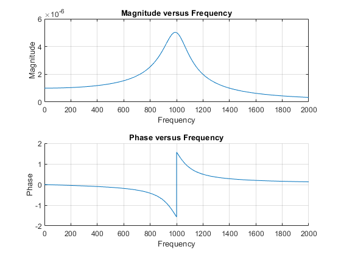
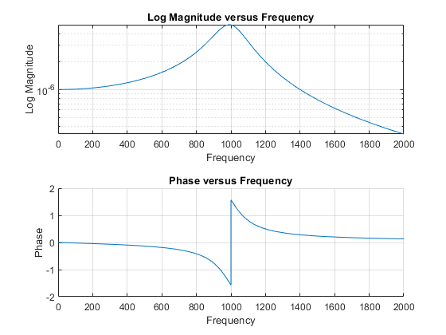
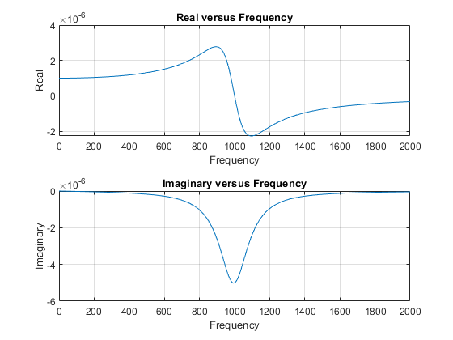
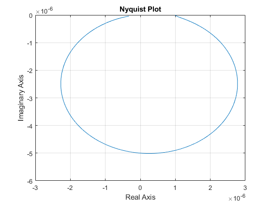

clc
clear all;
m = 1;
K = 1*10^6;
c = 200;
wn = sqrt(K/m);
w = 0:0.01:2000;
zeta = c/(2*wn*m);
r = w / wn;
a = (1-r.^2);
b = ((1-r.^2).^2 + (2*zeta*r).^2);
Re = (1/K)*a./b;
Im = (1/K)*(-2*zeta*r)./b;
phase = atan(Im./Re);
mag = sqrt(Re.^2 + Im.^2);
hold on;
tiledlayout(2,1)
nexttile;
plot(w,mag);
grid on;
title('Magnitude versus Frequency');
xlabel('Frequency'); ylabel('Magnitude');
hold off;
nexttile;
hold on;
plot(w, phase);
grid on;
title('Phase versus Frequency');
xlabel('Frequency'); ylabel('Phase');
hold off;

figure
hold on;
tiledlayout(2,1)
nexttile;
semilogy(w,mag);
grid on;
title('Log Magnitude versus Frequency');
xlabel('Frequency'); ylabel('Log Magnitude');
hold off;
nexttile;
hold on;
plot(w, phase);
grid on;
title('Phase versus Frequency');
xlabel('Frequency'); ylabel('Phase');
hold off;
disp('figure 1');
figure 1

figure;
tiledlayout(2,1)
nexttile;
plot(w,Re);
hold on;grid on;
title('Real versus Frequency');
xlabel('Frequency'); ylabel('Real');
hold off;
nexttile;
plot(w, Im);
hold on;grid on;
title('Imaginary versus Frequency');
xlabel('Frequency'); ylabel('Imaginary');
hold off;

figure;
plot(Re, Im);
hold on; grid on;
title('Nyquist Plot');
xlabel('Real Axis'); ylabel('Imaginary Axis');
hold off;
